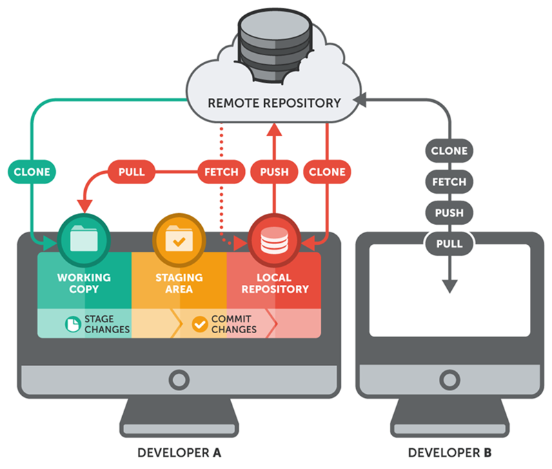

Clonar
Crea la primera copia local de un repositorio remoto.
6 · GitHub · Trabajo remoto
Aprende a traer un repositorio a tu equipo, mantenerlo sincronizado y publicar una rama para revisarla mediante una Pull Request.
GitHub guarda el repositorio remoto en Internet. En tu ordenador trabajas con una copia local. Ambos tienen el historial completo de commits, pero pueden avanzar de forma independiente hasta que los sincronizas.
Crea la primera copia local de un repositorio remoto.
Trae a tu copia local los commits que ya existen en GitHub.
Publica en GitHub los commits que has creado localmente.

Idea clave
Antes decide desde dónde empiezas:
git clone URL. El clone crea la copia local y configura automáticamente el remoto llamado origin.git remote add origin https://github.com/usuario/nombre-repositorio.git.Una vez existe esa conexión, usa git pull para traer cambios y git push para publicar los tuyos. git add y git commit siempre trabajan solo en local.
1 · Descargar un proyecto
En GitHub abre el repositorio, pulsa Code, selecciona HTTPS y copia la URL. En la carpeta donde quieras guardar el proyecto, ejecuta:
git clone https://github.com/usuario/nombre-repositorio.git
# Descarga el repositorio y crea una carpeta con su nombre.
cd nombre-repositorio
# Entra en la carpeta del repositorio que acabas de clonar.El comando crea la carpeta, descarga archivos e historial, y configura automáticamente el remoto con el nombre origin.
git remote -v
# Muestra la URL guardada para el remoto llamado origin.
git branch -a
# Lista las ramas locales y las ramas remotas conocidas.
git log --oneline --decorate -5
# Muestra los cinco últimos commits e indica las ramas y remotos.originEs el apodo habitual del repositorio remoto desde el que clonaste. Puedes comprobar su URL con git remote -v.
origin/mainEs la referencia local que Git guarda para recordar el último estado conocido de la rama main en GitHub.
Si tu repositorio usa master en lugar de main, sustituye el nombre de la rama en los comandos.
2 · Antes de empezar a editar
git pullAntes de comenzar una tarea, y antes de subir cambios, comprueba que tu rama esté actualizada. git pull descarga los commits del remoto y trata de integrarlos en la rama actual.
git switch main
# Cambia a la rama principal antes de actualizarla.
git pull origin main
# Descarga los commits de main en GitHub y los integra en tu main local.
git status
# Comprueba que no hay cambios pendientes ni conflictos.En una rama que ya está enlazada con su remota, normalmente basta con git pull. Indicar origin main hace visible de dónde y hacia qué rama se sincroniza.
Rutina recomendada
Primero guarda o confirma tu trabajo local. Después usa git pull. Si Git no puede integrar los cambios automáticamente, detendrá la operación para que resuelvas el conflicto, igual que en un merge local.
git fetch origin
# Descarga la información nueva del remoto, sin modificar tus archivos.
git log --oneline HEAD..origin/main
# Muestra los commits que están en GitHub pero todavía no están en tu rama local.git fetch origin solo descarga información y no modifica tus archivos. Es útil para mirar qué hay nuevo antes de integrar los cambios con git pull.
3 · Publicar una rama
git pushDespués de crear commits en una rama, publícala para que otras personas puedan verla y revisarla en GitHub.
git switch -c feature/mejora-readme
# Crea la rama de trabajo y cambia a ella.
git add README.md
# Añade al staging la mejora del README.
git commit -m "docs: mejora el README"
# Guarda la mejora como un commit en la rama local.
git push -u origin feature/mejora-readme
# Publica la rama en GitHub y la enlaza con la rama remota.La opción -u enlaza por primera vez la rama local con la rama remota. Desde ese momento, mientras trabajes en esa rama, normalmente podrás usar solo git push y git pull.
Revisa git status, confirma los cambios con un mensaje claro y actualiza la rama si han trabajado otras personas.
Normalmente el remoto tiene commits que tú no tienes. Ejecuta git pull, resuelve cualquier conflicto si aparece y vuelve a hacer git push.
4 · Revisar antes de integrar
Una Pull Request (PR) es una petición que dice: «He terminado este cambio en mi rama; revisémoslo antes de incorporarlo a la versión principal». Es una página de GitHub para comparar dos ramas, hablar sobre el cambio y decidir si se hace el merge.
feature/readmePull Request en GitHubmainPor ejemplo, has mejorado el README en feature/readme. La PR enseña exactamente qué líneas cambiarían si incorporas esa rama a main. Mientras la PR está abierta, main no cambia.
Crea una rama, hace commits y la publica con git push. Después abre la Pull Request.
Lee la descripción y el diff, deja comentarios o pide cambios. Puede ser una compañera, el profesor o la propia persona autora en una práctica individual.
Cuando el cambio es correcto, pulsa Merge pull request. Solo entonces los commits pasan a main.
Una PR no crea ni mueve tus commits
Primero creas los commits en tu ordenador y haces push. La PR solo propone incorporarlos. Si después corriges algo en la misma rama y haces otro push, la PR se actualiza automáticamente con esos nuevos commits.
git push -u origin nombre-rama.main. La rama origen será tu feature/....git switch main y git pull origin main.No confundas
Pull descarga e integra cambios del remoto en tu ordenador. Una Pull Request es una propuesta de revisión entre ramas en GitHub. Son acciones distintas, aunque compartan la palabra pull.
5 · Marcar una versión
Una etiqueta o tag es un nombre que señala un commit concreto. Sirve para identificar una versión estable, por ejemplo v1.0.0, sin crear una rama nueva ni modificar archivos.
git switch main
# Cambia a la rama principal, donde está la versión que vas a marcar.
git pull origin main
# Actualiza la rama principal con los últimos cambios de GitHub.
git tag -a v1.0.0 -m "Primera versión estable"
# Crea una etiqueta anotada llamada v1.0.0 en el commit actual.
git push origin v1.0.0
# Publica únicamente esa etiqueta en GitHub.
git tag
# Lista las etiquetas que existen en el repositorio local.
git show v1.0.0
# Muestra el commit y el mensaje asociados a la etiqueta v1.0.0.Crea la etiqueta cuando la rama principal esté actualizada y el proyecto funcione correctamente. El último comando publica esa etiqueta en GitHub; los commits ya deben haberse publicado antes.
Lista las etiquetas y consulta el commit al que apunta cada una para confirmar que has marcado la versión correcta.
En el repositorio abre Releases y después Tags. Allí verás la etiqueta y podrás consultar el código de esa versión.
Tag no es lo mismo que Release
El tag marca un commit. Una Release de GitHub presenta esa etiqueta con un título, notas de versión y, si hace falta, archivos descargables. Para crearla: Releases → Draft a new release, elige el tag y escribe una breve descripción.
Ejemplo · Trabajar desde una versión anterior
El proyecto ya tiene las versiones v1.0.0 y v1.0.1, pero quieres empezar un trabajo nuevo exactamente desde v1.0.0. No cambies la etiqueta: crea una rama nueva que parta de ella.
git clone https://github.com/usuario/nombre-repositorio.git
# Descarga el repositorio completo, incluido el historial y sus etiquetas.
cd nombre-repositorio
# Entra en la copia local del proyecto.
git switch -c feature-desde-v1.0.0 v1.0.0
# Crea una rama de trabajo que comienza en el commit marcado con v1.0.0.
git status
# Comprueba que estás en feature-desde-v1.0.0 y ya puedes trabajar.La rama feature-desde-v1.0.0 contiene el código de la versión v1.0.0, aunque el proyecto continúe por v1.0.1 o versiones posteriores. Si ya habías clonado el repositorio antes de que se publicara la etiqueta, ejecuta primero git fetch --tags origin.
Práctica
main, ejecuta git pull origin main.feature/readme y añade una sección breve al README.md explicando el contenido del repositorio.git add, git commit y publica la rama con git push -u origin feature/readme.feature/readme hacia main. Incluye un título y una descripción de dos o tres líneas.main con git pull origin main.